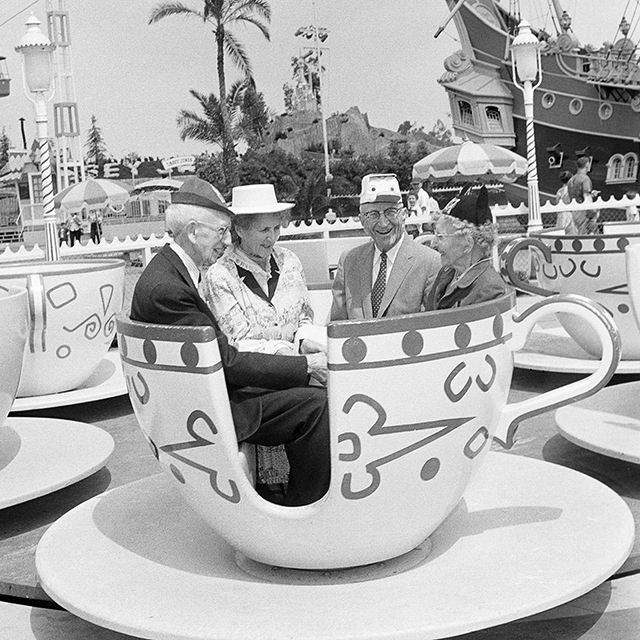

Walter Elias "Walt" Disney was born December 5, 1901, in Hermosa, Illinois. He and his brother Roy co-founded Walt Disney Productions, which one of the best-known motion-picture production companies in the world. Disney was an innovative animator and created the cartoon character Mickey Mouse. He won 22 Academy Awards during his lifetime, and was the founder of the theme parks Disneyland and DisneyWorld.
The concept for DisneyLand began when Walt Disney was visiting Griffith Park in Los Angeles with his daughters. While watching them on the merry-go-round, he came up with the idea of a place where adults and their children could go and have fun together, though his dream lay dormant for many years. His ideas evolved to a small play park with a boat ride and other themed areas. The initial concept, the Mickey Mouse Park, started with an 8-acre plot across Riverside Drive. Disney hired Harrison Price from Stanford Research Institute to gauge the proper are to locate the theme park based on the area's potential growth. Based on Price's analysis, Disney acquired 160 acreas of orange groves and walnut trees in Anaheim, California.
DisneyLand was dedicated at an "International Press Preview" event held on Sunday, July 17, 1955, which was only open to invited guests and the media. Although 28,000 people attended the event, only about half of those were actual invitees, the rest having purchased counterfeit tickets, or even sneaked into the park by climbing over the fence. The following day, it opened to the public, featuring twenty attractions. Crowds gathered in line as early as 2:00 am. The first person to buy a ticket and enter the park was David MacPherson. Approximately 50,000 guests attended the Monday opening day.
As of March 2017, Disneyland has 53 attractions.